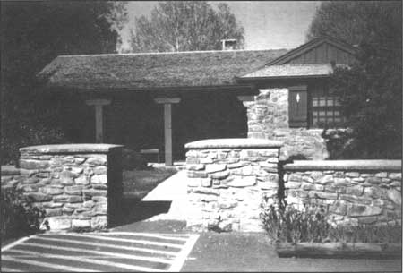
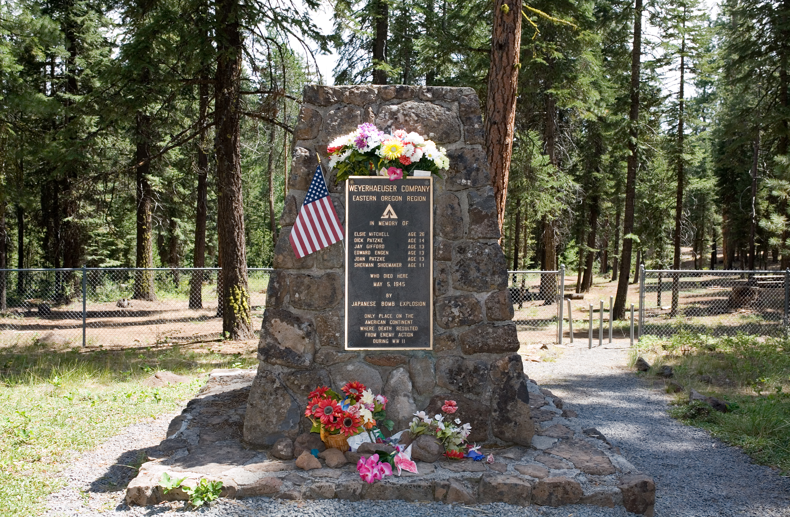

Start with the basics
About Bly
Community profile, quick facts, geography, and local background.
Read the overviewHistory Library
Key stories, articles, and historic timelines connected to Bly.
Visit historyBusinesses
Local services, shops, and organizations across town and nearby.
Browse listingsCommunity
Events, volunteer opportunities, and Bly Community Action Team.
Check progressStanding Stone Church rebuild
The historic Standing Stone Church was lost to fire and is being rebuilt with help from the community. Read the latest article and stay connected to progress.
Read the updatePlaces to know

Bly Ranger Station
Historic CCC-built station and gateway to forest resources.
Learn the story
Mitchell Monument
Memorial and picnic site marking the WWII balloon incident.
Visit the memorial
OC&E Woods Line Trail
Oregon's longest linear state park with hiking and biking access.
Plan a visitStories and photos
Get involved in Bly
Whether you are a resident or visitor, this community stays strong through volunteer energy and local support. Reach out or share updates that should be included here.
Contact the site team